CODING AGENTS AS PIXEL WORLD MODELS
traex/GPT-6.1-Sol · common50_0042
点击播放 · 原生 RGB 像素
逐轮保存的候选
回放视频、检查图与代码变化。
每份候选均可单独播放。实际图片检查记录在下方工具轨迹中。
候选 01播放与检查图
点击播放 · 原生 RGB 像素

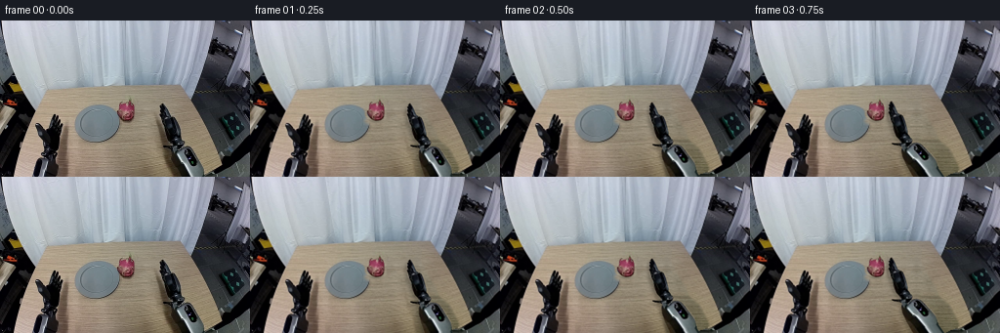
展开代码变化
--- 上一保存版本
+++ 本次保存版本
@@ -0,0 +1,182 @@
+from pathlib import Path
+import math
+import numpy as np
+from PIL import Image, ImageDraw, ImageFilter
+import cv2
+from scipy.ndimage import gaussian_filter
+import artifact_io
+
+ROOT=Path(__file__).resolve().parent
+S=4
+W,H=256,160
+EXT=260
+src=np.asarray(Image.open(ROOT/'first_frame.png').convert('RGB'))
+large=np.asarray(Image.fromarray(src).resize((W*S,EXT*S),Image.Resampling.BICUBIC)) if False else None
+
+def poly_mask(points, height=H, blur=.25):
+ m=Image.new('L',(W*S,height*S),0)
+ ImageDraw.Draw(m).polygon([(round(x*S),round(y*S)) for x,y in points],fill=255)
+ if blur: m=m.filter(ImageFilter.GaussianBlur(blur*S))
+ return np.asarray(m,dtype=np.float32)/255
+
+fruit_poly=[(120.4,89.5),(121.8,86),(122,84),(124,82.8),(127,83.7),(130,83.4),(131.6,83.0),(132,80.3),(132.1,77.7),(133.2,81.4),(134.5,83.3),(136.2,84.4),(136.5,87),(137.4,89.0),(137.7,95),(137.4,97.5),(136.3,100.2),(133.7,102),(129,102.8),(124.8,101.3),(122,99),(120.3,96.7),(119.6,94.1),(119.8,92),(119.6,90)]
+hand_poly=[(166.2,85.0),(167.7,85.1),(168.8,87.2),(170.3,90.3),(171.6,93.5),(173.6,97.6),(176.3,98.2),(178.4,100.1),(180.0,104.3),(181.9,110.4),(183.2,115.8),(183.2,118.6),(187.4,122.9),(188.2,125.6),(186.9,128.2),(184.3,131.5),(178.2,132.5),(176,130.7),(173.5,130.2),(169.7,129.8),(167.0,128.6),(167.1,127.5),(171.8,127.9),(175.2,127.8),(175.8,125.3),(173.8,123.1),(171.8,120.9),(170.3,117.6),(168.3,113.7),(167.0,108.4),(166.0,105.7),(164.4,102.5),(164.0,100.6),(165.0,99.0),(163.7,96.6),(163.2,95.0),(164.4,93.5),(163.2,90.6),(163.9,88.6),(165.2,88.1),(164.7,86.5)]
+fore_poly=[(178.5,130),(184.2,128.7),(188.7,129),(192.5,129.5),(195.9,131.2),(199,134),(203.6,141.5),(207.8,149.1),(209.0,155),(209.1,160),(181.0,160),(177.7,150),(175.6,140),(175.6,135),(176.2,133)]
+thumb_poly=[(174.1,98.4),(176.5,98.5),(178.6,101.2),(180.4,105.0),(182.0,111),(183.0,115.5),(181.7,119.2),(178.6,117.7),(176.8,112.7),(175.4,107.2),(173.8,102.9)]
+
+# Reconstruct only the table that is uncovered by the moving objects.
+yy,xx=np.mgrid[:H,:W]
+known=(yy>=72)&(xx>=78)&(xx<=173)
+known &= ~(((xx-100)/27)**2+((yy-106)/24)**2<1.18)
+known &= ~((xx>=116)&(xx<=143)&(yy>=77)&(yy<=107))
+known &= ~((xx>=158)&(yy>=85))
+known &= ~((xx<78)&(yy>100))
+# Fit the smooth illumination field; re-use real same-row wood grain for residual texture.
+f=lambda x,y:np.stack([np.ones_like(x),x/256,y/160,(y/160)**2,x*y/(256*160)],axis=-1)
+coef=np.linalg.lstsq(f(xx[known],yy[known]),src[known].astype(float),rcond=None)[0]
+field=f(xx,yy)@coef
+clean=src.astype(float).copy()
+for y in range(72,H):
+ if y<122: a,b=144,158
+ elif y<128: a,b=123,157
+ else: a,b=89,158
+ donor=src[y,a:b].astype(float)-field[y,a:b]
+ k=(np.arange(W)-a)%(2*(b-a)-2)
+ k=np.where(k<b-a,k,2*(b-a)-2-k)
+ clean[y]=field[y]+donor[k]
+# Table edge beneath the original bottom end of the right arm.
+for y in range(149,H):
+ edge=226.7-(y-148)*2.42
+ for x in range(174,214):
+ if x>edge:
+ v=src[y,min(214+int((x-edge)*.2),230)].astype(float)
+ clean[y,x]=v
+clean=np.clip(clean,0,255)
+remove_poly=[(159,84),(172,81),(178,94),(187,108),(194,123),(204,131),(214,150),(213,160),(170,160),(167,145),(161,124),(157,106)]
+remove=np.asarray(Image.fromarray((poly_mask(remove_poly,blur=1.0)*255).astype('uint8')).resize((W,H),Image.Resampling.LANCZOS),dtype=float)/255
+# Fruit and its little contact shadow.
+fmask_native=np.asarray(Image.fromarray((poly_mask(fruit_poly,blur=.2)*255).astype('uint8')).resize((W,H),Image.Resampling.LANCZOS))
+fr=Image.fromarray(fmask_native).filter(ImageFilter.MaxFilter(5)).filter(ImageFilter.GaussianBlur(.6))
+remove=np.maximum(remove,np.asarray(fr)/255)
+# Soft old cast shadows around hand and fruit are included in the repair mask.
+shadow_remove=Image.new('L',(W*S,H*S),0)
+d=ImageDraw.Draw(shadow_remove)
+d.ellipse((117*S,98*S,141*S,107*S),fill=255)
+d.polygon([(160*S,95*S),(171*S,100*S),(184*S,131*S),(196*S,160*S),(171*S,160*S),(165*S,133*S)],fill=255)
+shadow_remove=np.asarray(shadow_remove.filter(ImageFilter.GaussianBlur(1.4*S)).resize((W,H),Image.Resampling.LANCZOS))/255
+remove=np.maximum(remove,shadow_remove)
+bg=np.clip(src*(1-remove[...,None])+clean*remove[...,None],0,255).astype(np.uint8)
+BG=np.asarray(Image.fromarray(bg).resize((W*S,H*S),Image.Resampling.BICUBIC)).astype(np.float32)
+SOURCE=np.asarray(Image.fromarray(src).resize((W*S,H*S),Image.Resampling.BICUBIC)).astype(np.float32)
+
+# Pixel-textured rigid robot links. The lower sleeve continues outside the first
+# frame, so its cut edge never appears when the wrist moves upward.
+fore_alpha=np.zeros((EXT*S,W*S),np.float32)
+fore_alpha[:H*S]=poly_mask(fore_poly,blur=.25)
+fore_rgb=np.zeros((EXT*S,W*S,3),np.float32)
+fore_rgb[:H*S]=SOURCE
+last=fore_rgb[(H-1)*S:H*S].mean(axis=0)
+last_alpha=fore_alpha[(H-1)*S:H*S].mean(axis=0)
+for y in range(H*S,EXT*S):
+ offset=.43*(y-H*S)
+ u=np.arange(W*S)-offset
+ for c in range(3): fore_rgb[y,:,c]=np.interp(u,np.arange(W*S),last[:,c])
+ fore_alpha[y]=np.interp(u,np.arange(W*S),last_alpha,left=0,right=0)
+
+hand_alpha=poly_mask(hand_poly,blur=.22)
+thumb_alpha=poly_mask(thumb_poly,blur=.3)
+# The movable outer thumb is removed from the backing palm and re-attached
+# rigidly at its hinge. Fill the narrow exposed slit with the palm's dark color.
+hand_rgb=SOURCE.copy()
+# Store premultiplied textures for correct soft silhouette compositing.
+fruit_alpha=poly_mask(fruit_poly,blur=.28)
+
+def trans(pivot, target, angle):
+ a=math.radians(angle);c,s=math.cos(a),math.sin(a)
+ R=np.array([[c,-s],[s,c]])
+ off=np.array(target)-R@np.array(pivot)
+ return np.c_[R,off]*np.array([[1,1,S],[1,1,S]])
+
+def warp(rgb,alpha,M):
+ wa=cv2.warpAffine(alpha,M,(W*S,H*S),flags=cv2.INTER_LINEAR,borderMode=cv2.BORDER_CONSTANT)
+ wp=cv2.warpAffine(rgb*alpha[...,None],M,(W*S,H*S),flags=cv2.INTER_LINEAR,borderMode=cv2.BORDER_CONSTANT)
+ return wp,wa
+
+def over(dst,p,a): return dst*(1-a[...,None])+p
+
+def blob_shadow(dst, center, rx,ry,opacity):
+ gy,gx=np.mgrid[:H*S,:W*S]
+ q=((gx/S-center[0])/rx)**2+((gy/S-center[1])/ry)**2
+ a=opacity*np.exp(-2*q)
+ return dst*(1-a[...,None])
+
+# Continuous, eased kinematics: approach, close, lift, carry, lower, release,
+# and retract. Coordinates are camera-projected positions of rigid links.
+# frame, wrist dx/dy, sleeve angle, fruit dx/dy, thumb closure, lift
+keys=[
+(0,0,0,0,0,0,0,0),
+(1,-3,-.3,-2,0,0,0,0),
+(2,-11,-1.3,-7,0,0,0,0),
+(3,-22,-2.4,-12,0,0,0,0),
+(4,-30,-3,-17,0,0,0,0),
+(5,-33,-3,-19,0,0,.45,0),
+(6,-33,-3,-19,0,0,1,0),
+(7,-33,-9,-21,0,-6,1,6),
+(8,-33,-18,-23,0,-15,1,15),
+(9,-39,-20,-27,-6,-17,1,17),
+(10,-47,-18,-31,-14,-15,1,15),
+(11,-56,-15,-35,-23,-12,1,12),
+(12,-62,-12,-38,-29,-9,1,9),
+(13,-62,-6,-38,-29,-3,1,3),
+(14,-62,4,-38,-29,7,1,0),
+(15,-62,4,-38,-29,7,0.0,0),
+(16,-54,-3,-33,-29,7,0,0),
+(17,-35,-5,-24,-29,7,0,0),
+(18,-14,-2,-10,-29,7,0,0),
+(19,0,0,0,-29,7,0,0),
+]
+
+frames=[]
+for i,dx,dy,fa,fx,fy,close,lift in keys:
+ if i==0:
+ frames.append(src.copy());continue
+ frame=BG.copy()
+ wrist=(182+dx,129+dy)
+ MF=trans((182,129),wrist,fa)
+ MH=trans((182,129),wrist,0)
+ p,a=warp(fore_rgb,fore_alpha,MF)
+ hp,ha=warp(hand_rgb,hand_alpha,MH)
+ # Cast soft robot shadows offset to the lower-left on the wooden plane.
+ armA=np.maximum(a,ha)
+ shadow=cv2.warpAffine(armA,np.array([[1,0,-2.1*S],[0,1,2.6*S]],np.float32),(W*S,H*S))
+ shadow=cv2.GaussianBlur(shadow,(0,0),1.6*S)
+ tablemask=poly_mask([(45,70),(187,66),(227,148),(198,160),(17,160)],blur=.3)
+ frame*=1-.23*(shadow*tablemask)[...,None]
+ # Fruit's shadow remains below the carried fruit and softens as it lifts.
+ center=(128.5+fx,102.6+fy+lift*.73)
+ frame=blob_shadow(frame,center,9+lift*.16,2.6+lift*.10,.22*(1-lift*.020))
+ frame=over(frame,p,a)
+ # Rotate the thumb independently about its knuckle, without deforming it.
+ # At rest it is pixel-identical to the observed hand.
+ if close>0:
+ # Remove original thumb from the layer, while retaining adjoining palm.
+ al=hand_alpha*(1-thumb_alpha*.99)
+ hp,ha=warp(hand_rgb,al,MH)
+ frame=over(frame,hp,ha)
+ fruitM=trans((128.6,94.4),(128.6+fx,94.4+fy), -2.5 if lift>0 else 0)
+ fp,af=warp(SOURCE,fruit_alpha,fruitM)
+ frame=over(frame,fp,af)
+ # Close the outer rigid digit over the near side of the fruit.
+ tm=trans((179.7,116.4),(179.7+dx,116.4+dy),-43*close)
+ tp,ta=warp(SOURCE,thumb_alpha,tm)
+ frame=over(frame,tp,ta)
+ frame=np.clip(frame,0,255).astype(np.uint8)
+ frame=np.asarray(Image.fromarray(frame).resize((W,H),Image.Resampling.LANCZOS))
+ frames.append(frame)
+
+frames=np.stack(frames).astype(np.uint8)
+artifact_io.save(frames,ROOT)
+Image.fromarray(bg).save(ROOT/'.tmp'/'background.png')
+for i in [5,6,10,14,19]:
+ Image.fromarray(frames[i]).resize((1024,640)).save(ROOT/'.tmp'/f'preview_{i:02}.png')
+print('Saved',frames.shape,'RGB frames')
候选 02播放与检查图
点击播放 · 原生 RGB 像素
展开代码变化
--- 上一保存版本
+++ 本次保存版本
@@ -37,13 +37,15 @@
field=f(xx,yy)@coef
clean=src.astype(float).copy()
for y in range(72,H):
- if y<122: a,b=144,158
- elif y<128: a,b=123,157
- else: a,b=89,158
- donor=src[y,a:b].astype(float)-field[y,a:b]
- k=(np.arange(W)-a)%(2*(b-a)-2)
- k=np.where(k<b-a,k,2*(b-a)-2-k)
- clean[y]=field[y]+donor[k]
+ textures=[]
+ for a,b in [(144,158),(89,158)]:
+ donor=src[y,a:b].astype(float)-field[y,a:b]
+ donor-=donor.mean(axis=0)
+ k=(np.arange(W)-a)%(2*(b-a)-2)
+ k=np.where(k<b-a,k,2*(b-a)-2-k)
+ textures.append(donor[k])
+ mix=np.clip((y-126)/9,0,1)
+ clean[y]=field[y]+textures[0]*(1-mix)+textures[1]*mix
# Table edge beneath the original bottom end of the right arm.
for y in range(149,H):
edge=226.7-(y-148)*2.42
@@ -65,6 +67,14 @@
d.polygon([(160*S,95*S),(171*S,100*S),(184*S,131*S),(196*S,160*S),(171*S,160*S),(165*S,133*S)],fill=255)
shadow_remove=np.asarray(shadow_remove.filter(ImageFilter.GaussianBlur(1.4*S)).resize((W,H),Image.Resampling.LANCZOS))/255
remove=np.maximum(remove,shadow_remove)
+# Preserve the plate as a fixed, whole object, including its right-hand rim.
+plate_poly=[(100,85.6),(108,86.7),(114,90),(118.4,95),(121.3,101.5),
+ (121.4,109),(119,116),(115,120),(108,123),(101,124.6),
+ (93,124),(86,122),(81,118),(77.4,112.2),(76.7,106),
+ (78.6,99),(82,93.8),(87.5,89.5),(94,86.7)]
+plate_keep=np.asarray(Image.fromarray((poly_mask(plate_poly,blur=.15)*255).astype('uint8')).resize((W,H),Image.Resampling.LANCZOS))/255
+plate_keep*=1-np.asarray(Image.fromarray(fmask_native).filter(ImageFilter.MaxFilter(3)))/255
+remove*=1-plate_keep
bg=np.clip(src*(1-remove[...,None])+clean*remove[...,None],0,255).astype(np.uint8)
BG=np.asarray(Image.fromarray(bg).resize((W*S,H*S),Image.Resampling.BICUBIC)).astype(np.float32)
SOURCE=np.asarray(Image.fromarray(src).resize((W*S,H*S),Image.Resampling.BICUBIC)).astype(np.float32)
@@ -163,7 +173,7 @@
al=hand_alpha*(1-thumb_alpha*.99)
hp,ha=warp(hand_rgb,al,MH)
frame=over(frame,hp,ha)
- fruitM=trans((128.6,94.4),(128.6+fx,94.4+fy), -2.5 if lift>0 else 0)
+ fruitM=trans((128.6,94.4),(128.6+fx,94.4+fy), -2.5*min(lift/6,1))
fp,af=warp(SOURCE,fruit_alpha,fruitM)
frame=over(frame,fp,af)
# Close the outer rigid digit over the near side of the fruit.
候选 03播放与检查图
候选 04播放与检查图
点击播放 · 原生 RGB 像素
展开代码变化
--- 上一保存版本
+++ 本次保存版本
@@ -11,7 +11,6 @@
W,H=256,160
EXT=260
src=np.asarray(Image.open(ROOT/'first_frame.png').convert('RGB'))
-large=np.asarray(Image.fromarray(src).resize((W*S,EXT*S),Image.Resampling.BICUBIC)) if False else None
def poly_mask(points, height=H, blur=.25):
m=Image.new('L',(W*S,height*S),0)
@@ -180,8 +179,10 @@
tm=trans((179.7,116.4),(179.7+dx,116.4+dy),-43*close)
tp,ta=warp(SOURCE,thumb_alpha,tm)
frame=over(frame,tp,ta)
- frame=np.clip(frame,0,255).astype(np.uint8)
- frame=np.asarray(Image.fromarray(frame).resize((W,H),Image.Resampling.LANCZOS))
+ # Composite the supersampled changes over the untouched native-resolution
+ # workspace, avoiding any resampling of the fixed scene or left arm.
+ delta=cv2.resize(frame-BG,(W,H),interpolation=cv2.INTER_AREA)
+ frame=np.clip(bg.astype(np.float32)+delta,0,255).round().astype(np.uint8)
frames.append(frame)
frames=np.stack(frames).astype(np.uint8)
可观测工具轨迹
实际执行的命令与返回图片。
命令 1exit 0
/bin/bash -lc "ls -la && cat prompt.txt && printf '\\n--- RULES ---\\n' && cat GENERATION_RULES.md"
命令 2exit 0
/bin/bash -lc "cat task_spec.json && cat artifact_io.py && python - <<'PY'
from PIL import Image
im=Image.open('first_frame.png');print(im.size);im.resize((1024,640)).save('.tmp/first_large.png')
PY"命令 3exit 0
/bin/bash -lc "python - <<'PY'
from PIL import Image
im=Image.open('first_frame.png')
im.crop((115,72,211,160)).resize((768,704)).save('.tmp/detail.png')
PY"命令 4exit 0
/bin/bash -lc "python - <<'PY' import importlib.util for x in ['numpy','scipy','cv2']: print(x,importlib.util.find_spec(x)) PY"
命令 5exit 0
/bin/bash -lc "python - <<'PY'
from PIL import Image
im=Image.open('first_frame.png')
im.crop((155,80,212,160)).resize((456,640),Image.Resampling.NEAREST).save('.tmp/arm_nearest.png')
im.crop((115,76,143,106)).resize((336,360),Image.Resampling.NEAREST).save('.tmp/fruit_nearest.png')
PY"命令 6exit 0
/bin/bash -lc "python - <<'PY'
from PIL import Image,ImageDraw
im=Image.open('first_frame.png').resize((1024,640),Image.Resampling.NEAREST)
d=ImageDraw.Draw(im)
for x in range(0,257,10):
d.line((x*4,0,x*4,640),fill=(255,0,0),width=1);d.text((x*4,250),str(x),fill='white')
for y in range(0,161,10):
d.line((0,y*4,1024,y*4),fill=(255,0,0),width=1);d.text((565,y*4),str(y),fill='white')
im.save('.tmp/grid.png')
PY"命令 7exit 0
/bin/bash -lc "cat > generate.py <<'PY'
from pathlib import Path
import math
import numpy as np
from PIL import Image, ImageDraw, ImageFilter
import cv2
from scipy.ndimage import gaussian_filter
import artifact_io
ROOT=Path(__file__).resolve().parent
S=4
W,H=256,160
EXT=260
src=np.asarray(Image.open(ROOT/'first_frame.png').convert('RGB'))
large=np.asarray(Image.fromarray(src).resize((W*S,EXT*S),Image.Resampling.BICUBIC)) if False else None
def poly_mask(points, height=H, blur=.25):
m=Image.new('L',(W*S,height*S),0)
ImageDraw.Draw(m).polygon([(round(x*S),round(y*S)) for x,y in points],fill=255)
if blur: m=m.filter(ImageFilter.GaussianBlur(blur*S))
return np.asarray(m,dtype=np.float32)/255
fruit_poly=[(120.4,89.5),(121.8,86),(122,84),(124,82.8),(127,83.7),(130,83.4),(131.6,83.0),(132,80.3),(132.1,77.7),(133.2,81.4),(134.5,83.3),(136.2,84.4),(136.5,87),(137.4,89.0),(137.7,95),(137.4,97.5),(136.3,100.2),(133.7,102),(129,102.8),(124.8,101.3),(122,99),(120.3,96.7),(119.6,94.1),(119.8,92),(119.6,90)]
hand_poly=[(166.2,85.0),(167.7,85.1),(168.8,87.2),(170.3,90.3),(171.6,93.5),(173.6,97.6),(176.3,98.2),(178.4,100.1),(180.0,104.3),(181.9,110.4),(183.2,115.8),(183.2,118.6),(187.4,122.9),(188.2,125.6),(186.9,128.2),(184.3,131.5),(178.2,132.5),(176,130.7),(173.5,130.2),(169.7,129.8),(167.0,128.6),(167.1,127.5),(171.8,127.9),(175.2,127.8),(175.8,125.3),(173.8,123.1),(171.8,120.9),(170.3,117.6),(168.3,113.7),(167.0,108.4),(166.0,105.7),(164.4,102.5),(164.0,100.6),(165.0,99.0),(163.7,96.6),(163.2,95.0),(164.4,93.5),(163.2,90.6),(163.9,88.6),(165.2,88.1),(164.7,86.5)]
fore_poly=[(178.5,130),(184.2,128.7),(188.7,129),(192.5,129.5),(195.9,131.2),(199,134),(203.6,141.5),(207.8,149.1),(209.0,155),(209.1,160),(181.0,160),(177.7,150),(175.6,140),(175.6,135),(176.2,133)]
thumb_poly=[(174.1,98.4),(176.5,98.5),(178.6,101.2),(180.4,105.0),(182.0,111),(183.0,115.5),(181.7,119.2),(178.6,117.7),(176.8,112.7),(175.4,107.2),(173.8,102.9)]
# Reconstruct only the table that is uncovered by the moving objects.
yy,xx=np.mgrid[:H,:W]
known=(yy>=72)&(xx>=78)&(xx<=173)
known &= ~(((xx-100)/27)**2+((yy-106)/24)**2<1.18)
known &= ~((xx>=116)&(xx<=143)&(yy>=77)&(yy<=107))
known &= ~((xx>=158)&(yy>=85))
known &= ~((xx<78)&(yy>100))
# Fit the smooth illumination field; re-use real same-row wood grain for residual texture.
f=lambda x,y:np.stack([np.ones_like(x),x/256,y/160,(y/160)**2,x*y/(256*160)],axis=-1)
coef=np.linalg.lstsq(f(xx[known],yy[known]),src[known].astype(float),rcond=None)[0]
field=f(xx,yy)@coef
clean=src.astype(float).copy()
for y in range(72,H):
if y<122: a,b=144,158
elif y<128: a,b=123,157
else: a,b=89,158
donor=src[y,a:b].astype(float)-field[y,a:b]
k=(np.arange(W)-a)%(2*(b-a)-2)
k=np.where(k<b-a,k,2*(b-a)-2-k)
clean[y]=field[y]+donor[k]
# Table edge beneath the original bottom end of the right arm.
for y in range(149,H):
edge=226.7-(y-148)*2.42
for x in range(174,214):
if x>edge:
v=src[y,min(214+int((x-edge)*.2),230)].astype(float)
clean[y,x]=v
clean=np.clip(clean,0,255)
remove_poly=[(159,84),(172,81),(178,94),(187,108),(194,123),(204,131),(214,150),(213,160),(170,160),(167,145),(161,124),(157,106)]
remove=np.asarray(Image.fromarray((poly_mask(remove_poly,blur=1.0)*255).astype('uint8')).resize((W,H),Image.Resampling.LANCZOS),dtype=float)/255
# Fruit and its little contact shadow.
fmask_native=np.asarray(Image.fromarray((poly_mask(fruit_poly,blur=.2)*255).astype('uint8')).resize((W,H),Image.Resampling.LANCZOS))
fr=Image.fromarray(fmask_native).filter(ImageFilter.MaxFilter(5)).filter(ImageFilter.GaussianBlur(.6))
remove=np.maximum(remove,np.asarray(fr)/255)
# Soft old cast shadows around hand and fruit are included in the repair mask.
shadow_remove=Image.new('L',(W*S,H*S),0)
d=ImageDraw.Draw(shadow_remove)
d.ellipse((117*S,98*S,141*S,107*S),fill=255)
d.polygon([(160*S,95*S),(171*S,100*S),(184*S,131*S),(196*S,160*S),(171*S,160*S),(165*S,133*S)],fill=255)
shadow_remove=np.asarray(shadow_remove.filter(ImageFilter.GaussianBlur(1.4*S)).resize((W,H),Image.Resampling.LANCZOS))/255
remove=np.maximum(remove,shadow_remove)
bg=np.clip(src*(1-remove[...,None])+clean*remove[...,None],0,255).astype(np.uint8)
BG=np.asarray(Image.fromarray(bg).resize((W*S,H*S),Image.Resampling.BICUBIC)).astype(np.float32)
SOURCE=np.asarray(Image.fromarray(src).resize((W*S,H*S),Image.Resampling.BICUBIC)).astype(np.float32)
# Pixel-textured rigid robot links. The lower sleeve continues outside the first
# frame, so its cut edge never appears when the wrist moves upward.
fore_alpha=np.zeros((EXT*S,W*S),np.float32)
fore_alpha[:H*S]=poly_mask(fore_poly,blur=.25)
fore_rgb=np.zeros((EXT*S,W*S,3),np.float32)
fore_rgb[:H*S]=SOURCE
last=fore_rgb[(H-1)*S:H*S].mean(axis=0)
last_alpha=fore_alpha[(H-1)*S:H*S].mean(axis=0)
for y in range(H*S,EXT*S):
offset=.43*(y-H*S)
u=np.arange(W*S)-offset
for c in range(3): fore_rgb[y,:,c]=np.interp(u,np.arange(W*S),last[:,c])
fore_alpha[y]=np.interp(u,np.arange(W*S),last_alpha,left=0,right=0)
hand_alpha=poly_mask(hand_poly,blur=.22)
thumb_alpha=poly_mask(thumb_poly,blur=.3)
# The movable outer thumb is removed from the backing palm and re-attached
# rigidly at its hinge. Fill the narrow exposed slit with the palm's dark color.
hand_rgb=SOURCE.copy()
# Store premultiplied textures for correct soft silhouette compositing.
fruit_alpha=poly_mask(fruit_poly,blur=.28)
def trans(pivot, target, angle):
a=math.radians(angle);c,s=math.cos(a),math.sin(a)
R=np.array([[c,-s],[s,c]])
off=np.array(target)-R@np.array(pivot)
return np.c_[R,off]*np.array([[1,1,S],[1,1,S]])
def warp(rgb,alpha,M):
wa=cv2.warpAffine(alpha,M,(W*S,H*S),flags=cv2.INTER_LINEAR,borderMode=cv2.BORDER_CONSTANT)
wp=cv2.warpAffine(rgb*alpha[...,None],M,(W*S,H*S),flags=cv2.INTER_LINEAR,borderMode=cv2.BORDER_CONSTANT)
return wp,wa
def over(dst,p,a): return dst*(1-a[...,None])+p
def blob_shadow(dst, center, rx,ry,opacity):
gy,gx=np.mgrid[:H*S,:W*S]
q=((gx/S-center[0])/rx)**2+((gy/S-center[1])/ry)**2
a=opacity*np.exp(-2*q)
return dst*(1-a[...,None])
# Continuous, eased kinematics: approach, close, lift, carry, lower, release,
# and retract. Coordinates are camera-projected positions of rigid links.
# frame, wrist dx/dy, sleeve angle, fruit dx/dy, thumb closure, lift
keys=[
(0,0,0,0,0,0,0,0),
(1,-3,-.3,-2,0,0,0,0),
(2,-11,-1.3,-7,0,0,0,0),
(3,-22,-2.4,-12,0,0,0,0),
(4,-30,-3,-17,0,0,0,0),
(5,-33,-3,-19,0,0,.45,0),
(6,-33,-3,-19,0,0,1,0),
(7,-33,-9,-21,0,-6,1,6),
(8,-33,-18,-23,0,-15,1,15),
(9,-39,-20,-27,-6,-17,1,17),
(10,-47,-18,-31,-14,-15,1,15),
(11,-56,-15,-35,-23,-12,1,12),
(12,-62,-12,-38,-29,-9,1,9),
(13,-62,-6,-38,-29,-3,1,3),
(14,-62,4,-38,-29,7,1,0),
(15,-62,4,-38,-29,7,0.0,0),
(16,-54,-3,-33,-29,7,0,0),
(17,-35,-5,-24,-29,7,0,0),
(18,-14,-2,-10,-29,7,0,0),
(19,0,0,0,-29,7,0,0),
]
frames=[]
for i,dx,dy,fa,fx,fy,close,lift in keys:
if i==0:
frames.append(src.copy());continue
frame=BG.copy()
wrist=(182+dx,129+dy)
MF=trans((182,129),wrist,fa)
MH=trans((182,129),wrist,0)
p,a=warp(fore_rgb,fore_alpha,MF)
hp,ha=warp(hand_rgb,hand_alpha,MH)
# Cast soft robot shadows offset to the lower-left on the wooden plane.
armA=np.maximum(a,ha)
shadow=cv2.warpAffine(armA,np.array([[1,0,-2.1*S],[0,1,2.6*S]],np.float32),(W*S,H*S))
shadow=cv2.GaussianBlur(shadow,(0,0),1.6*S)
tablemask=poly_mask([(45,70),(187,66),(227,148),(198,160),(17,160)],blur=.3)
frame*=1-.23*(shadow*tablemask)[...,None]
# Fruit's shadow remains below the carried fruit and softens as it lifts.
center=(128.5+fx,102.6+fy+lift*.73)
frame=blob_shadow(frame,center,9+lift*.16,2.6+lift*.10,.22*(1-lift*.020))
frame=over(frame,p,a)
# Rotate the thumb independently about its knuckle, without deforming it.
# At rest it is pixel-identical to the observed hand.
if close>0:
# Remove original thumb from the layer, while retaining adjoining palm.
al=hand_alpha*(1-thumb_alpha*.99)
hp,ha=warp(hand_rgb,al,MH)
frame=over(frame,hp,ha)
fruitM=trans((128.6,94.4),(128.6+fx,94.4+fy), -2.5 if lift>0 else 0)
fp,af=warp(SOURCE,fruit_alpha,fruitM)
frame=over(frame,fp,af)
# Close the outer rigid digit over the near side of the fruit.
tm=trans((179.7,116.4),(179.7+dx,116.4+dy),-43*close)
tp,ta=warp(SOURCE,thumb_alpha,tm)
frame=over(frame,tp,ta)
frame=np.clip(frame,0,255).astype(np.uint8)
frame=np.asarray(Image.fromarray(frame).resize((W,H),Image.Resampling.LANCZOS))
frames.append(frame)
frames=np.stack(frames).astype(np.uint8)
artifact_io.save(frames,ROOT)
Image.fromarray(bg).save(ROOT/'.tmp'/'background.png')
for i in [5,6,10,14,19]:
Image.fromarray(frames[i]).resize((1024,640)).save(ROOT/'.tmp'/f'preview_{i:02}.png')
print('Saved',frames.shape,'RGB frames')
PY
python generate.py"命令 8exit 0
/bin/bash -lc "python - <<'PY'
from PIL import Image
im=Image.open('first_frame.png'); im.crop((74,84,125,128)).resize((612,528),Image.Resampling.NEAREST).save('.tmp/plate.png')
PY"命令 9exit 0
/bin/bash -lc 'python generate.py'
命令 10exit 0
/bin/bash -lc "python generate.py && python - <<'PY'
from pathlib import Path
from PIL import Image
import numpy as np
p=Path('.')
a=np.stack([np.array(Image.open(p/'frames'/f'{i:02d}.png')) for i in range(20)])
assert a.shape==(20,160,256,3)
assert a.dtype==np.uint8
assert np.array_equal(a[0],np.array(Image.open('first_frame.png')))
z=np.load('pixels.npz')['pixels']; assert z.shape==(160,256,20)
print('Verified: 20 RGB frames, 256x160, exact frame 00. pixels.npz and index.html ready.')
PY"视觉工具实际返回图片 1
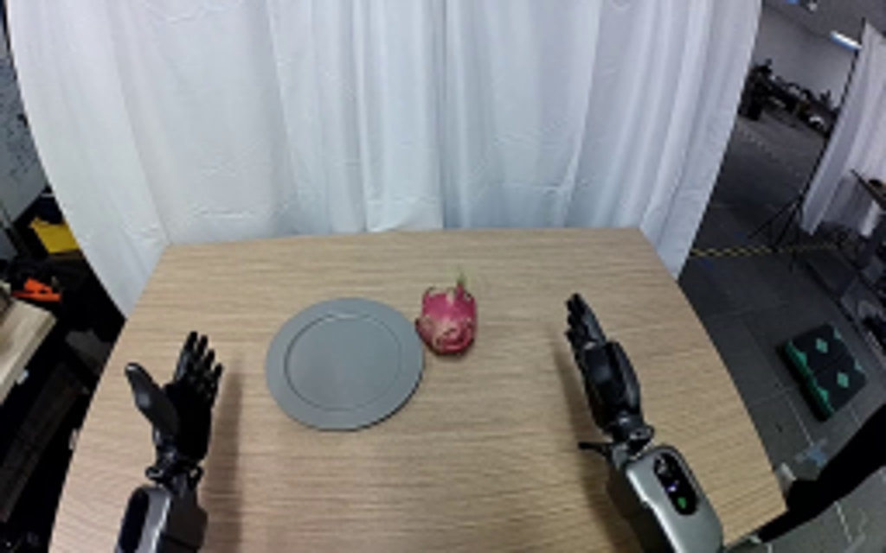
视觉工具实际返回图片 2
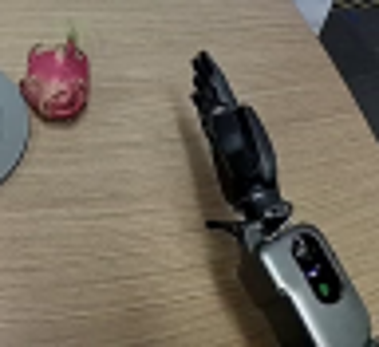
视觉工具实际返回图片 3
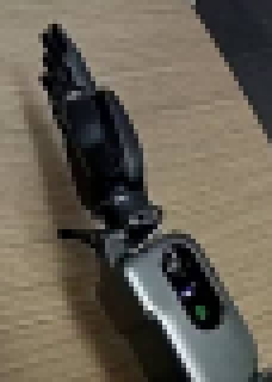
视觉工具实际返回图片 4
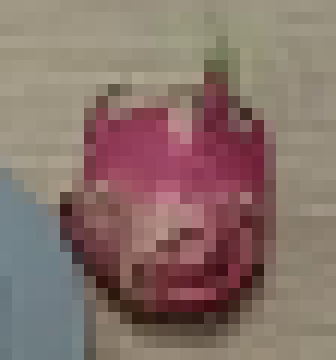
视觉工具实际返回图片 5
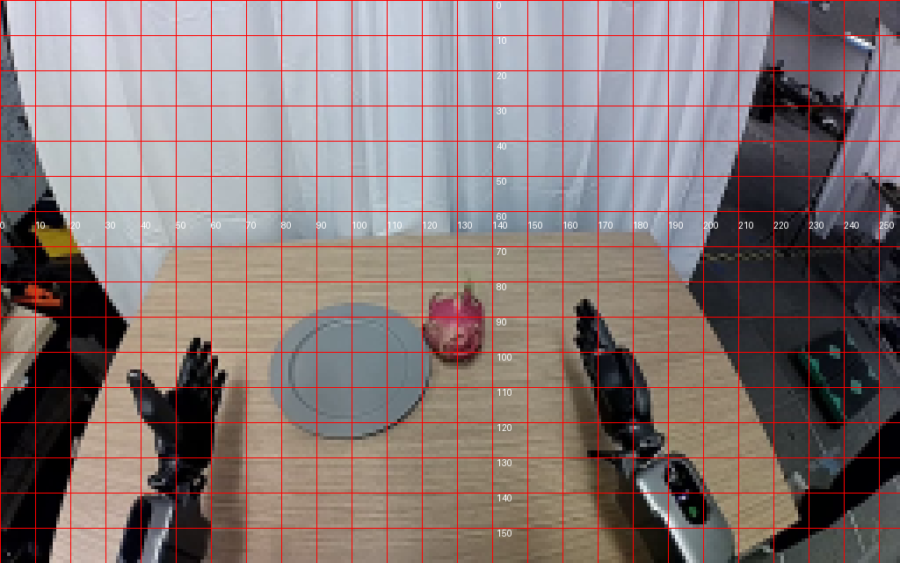
视觉工具实际返回图片 6

视觉工具实际返回图片 7
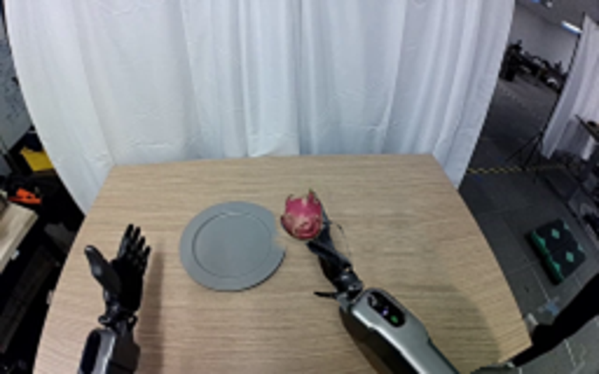
视觉工具实际返回图片 8
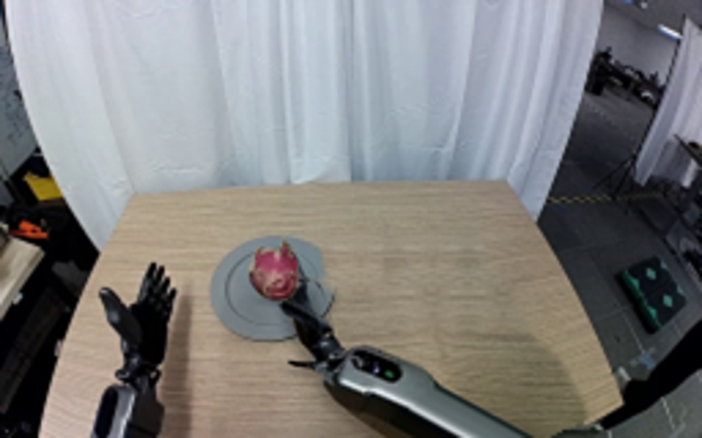
视觉工具实际返回图片 9
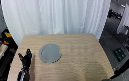
视觉工具实际返回图片 10
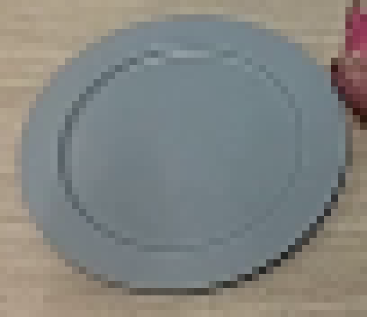
视觉工具实际返回图片 11
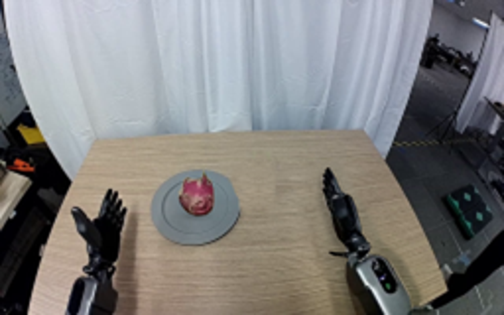
视觉工具实际返回图片 12

保存候选 4 份；完成命令 10 次；可验证图片返回 12 张。原始 API 响应与完整日志保留在本地。